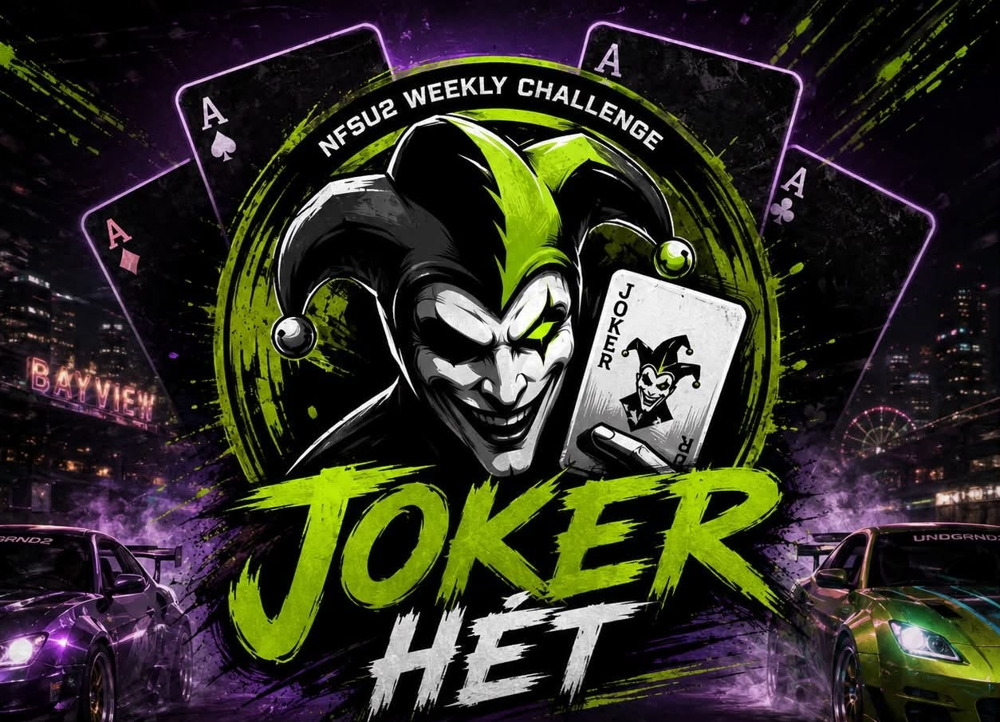

Üdvözlünk Bayview utcáin
Vissza az Underground 2 utcáira
Ha még mindig ott lapul a gépeden a Need for Speed Underground 2, itt az ideje újra beindítani a verdát. Ez egy magyar közösségi kihívássorozat azoknak, akik szeretnének heti szinten versenyezni, időket javítani és összemérni a tudásukat Bayview pályáin.
A bajnokság lényege
Minden héten három kihívás vár a versenyzőkre. Megadott pályákon, megadott feltételek mellett kell a lehető legjobb eredményt elérni, majd screenshot formájában beküldeni.
A legjobb eredmények pontokat érnek, ezekből áll össze a heti pontverseny és a szezon végi bajnokság.
Saját építésű autók
Tuningolt verdák, saját beállítások, saját stílus.
Heti megkötések
Autó, pálya vagy szabály alapján változó kihívások.
Több versenytípus
Sprint, Circuit, Drag, Drift, Street X és URL futamok.
Screenshot beküldés
Post Race Stats kép alapján kerülnek rögzítésre az eredmények.
Szabad autóválasztás, rekordvadászat
Joker héten nincsenek autómegkötések. Ilyenkor Bayview leggyorsabb versenyzőit keressük, és lehetőség nyílik a hivatalos pályarekordok megdöntésére.
A rekordok és a szezonok eredményei később is visszakereshetők lesznek az oldalon, így minden komoly futam nyomot hagy a közösség történetében.
